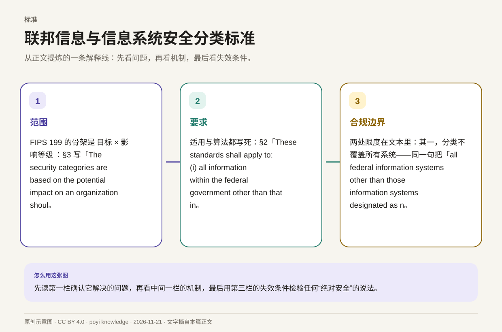
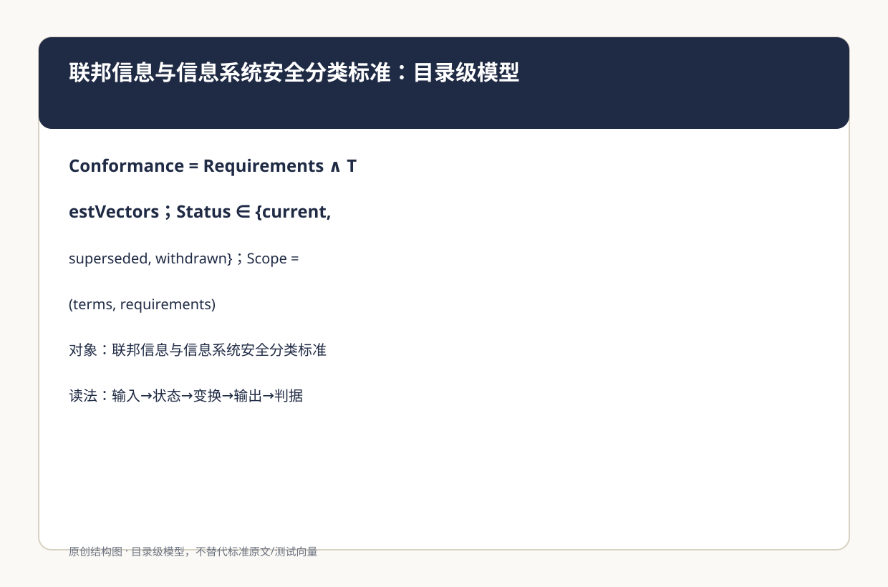

原理与机制
标准：联邦信息与信息系统安全分类标准（Standards for Security Categorization of Federal Information and Information Systems）。FIPS 199 的骨架是目标 × 影响等级：§3 写「The security categories are based on the potential impact on an organization should certain events occur which jeopardize the information and information systems needed by the organization to accomplish its assigned mission, protect its assets, fulfill its legal responsibilities, maintain its day-to-day functions, and protect individuals.」并借 FISMA 给出三个安全目标——「The FISMA defines three security objectives for information and information systems」，分别是保密性、完整性与可用性，其中保密性的定义直接引自 44 U.S.C.：「Preserving authorized restrictions on information access and disclosure, including means for protecting personal privacy and proprietary information」，原文在此之后附上 [44 U.S.C., Sec.3542] 的出处标注。

为什么重要
之所以需要统一分类，是为了让风险判断可比：正文强调「Security categories are to be used in conjunction with vulnerability and threat information in assessing the risk to an organization.」并在目标之外定义后果——「A loss of confidentiality is the unauthorized disclosure of information.」，把泄露/篡改/失效映射到可讨论的影响值上。
应用与实例
适用与算法都写死：§2「These standards shall apply to: (i) all information within the federal government other than that information that has been determined pursuant to Executive Order 12958, as amended by Executive Order 13292, or any predecessor order, or by the Atomic Energy Act of 1954, as amended, to require protection against unauthorized disclosure and is marked to indicate its classified status」——排除条件是已依行政令定密并标注密级，且「Agency officials shall use the security categorizations described in FIPS Publication 199 whenever there is a federal requirement to provide such a categorization」。系统级取值规则是取最高——「For an information system, the potential impact values assigned to the respective security objectives (confidentiality, integrity, availability) shall be the highest values (i.e., high water mark) from among those security categories that have been determined for each type of information resident on the information system」。

边界与攻击面
模型只在登记的输入域与参数假设内成立；越界输入、密钥复用、实现偏离规范与版本差异都会使结论失效。
历史与背景
标准名为「Standards for Security Categorization of Federal Information and Information Systems」，文件日期栏写 February 2004，即 2004 年 2 月；生效方式写明「These standards are effective upon approval by the Secretary of Commerce.」，与后续 NIST 指南的分工也在 §1 交代——「Subsequent NIST standards and guidelines will address the second and third tasks cited.」
逐步示例与核验
形式模型与复算步骤
[S=\min_i S_i,\quad S_i\in{\text{密钥强度},\text{分组安全},\text{实现安全}}]
联邦信息与信息系统安全分类标准的公开参数、密钥/随机数与消息；变量说明：S 为综合安全强度；各分量取最小值，不能只看密钥位数。1.读取标准规定的密钥/分组/模式参数。2.按标准表换算等效强度。3.取最弱分量作为系统强度。边界：公式只覆盖已登记的参数与假设；参数取值、标准版本和实现细节仍以来源为准。
参考出处
- Wikipedia search entry for 联邦信息与信息系统安全分类标准. https://zh.wikipedia.org/w/index.php?search=%E8%81%94%E9%82%A6%E4%BF%A1%E6%81%AF%E4%B8%8E%E4%BF%A1%E6%81%AF%E7%B3%BB%E7%BB%9F%E5%AE%89%E5%85%A8%E5%88%86%E7%B1%BB%E6%A0%87%E5%87%86
- Handbook of Applied Cryptography (Menezes, van Oorschot, Vanstone). https://www.cacr.math.uwaterloo.ca/hac/